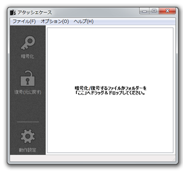
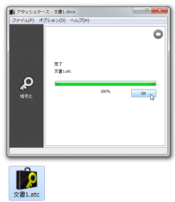

使い方はシンプルです。「アタッシェケース」ショートカットアイコンか、 あるいは起動したウィンドウの上に、暗号化したいファイルをドラッグ＆ドロップするだけです。

エクスプローラー、またはデスクトップなどから、暗号化したいフォルダーやファイルを直接ドラッグ＆ドロップします。

次に暗号化するためのパスワード入力を促されます。
推測されにくい長めのパスワード入力をオススメします。
ただし、パスワードの入力文字数には制限があり、大文字小文字を区別し、半角で32文字（全角だと16文字）以内です。

パスワードを入力すると、確認のため、再度同じパスワード入力を促されます。 これは誤ったパスワードで暗号化してしまい、元に戻せなくなるのを防ぐために行います。

パスワードの確認が行われると、暗号化処理が開始されます。

「完了」のメッセージと「100%」を表示されたら、暗号化は完了しています。 元のファイルと同じ場所に、暗号化されたファイル（拡張子は.atc）があるか確認してみてください。

暗号化ファイルは常に、デスクトップに保存したいとか、パスワードを記憶して、 入力をスキップさせたいなど、その他にも、いろいろな動作設定オプションが用意されています。 それらは、「動作設定」の項目をご覧ください。